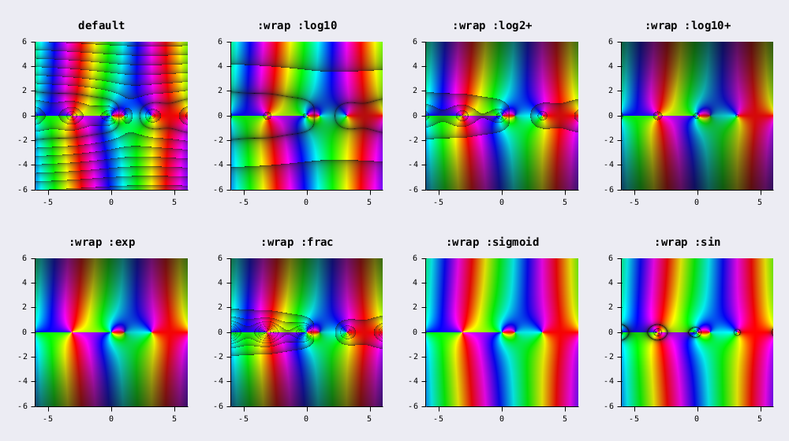
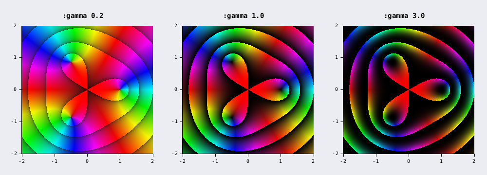
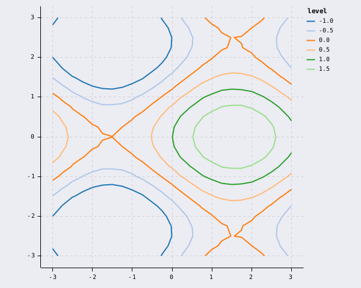
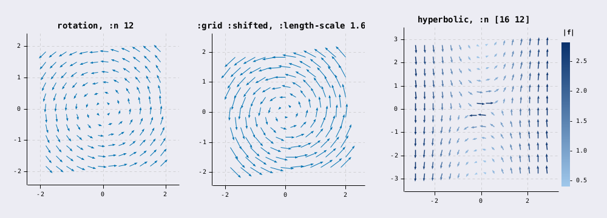
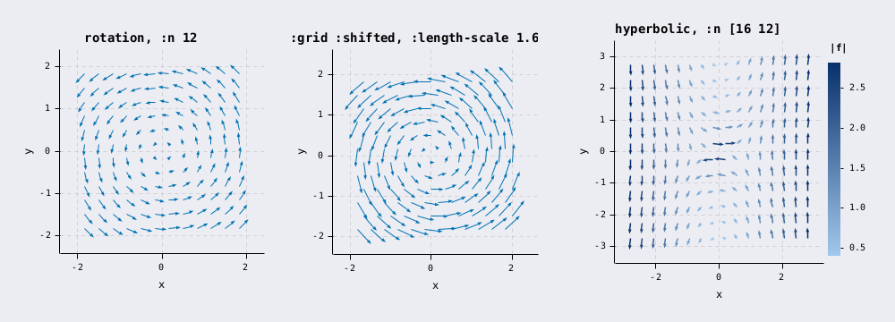
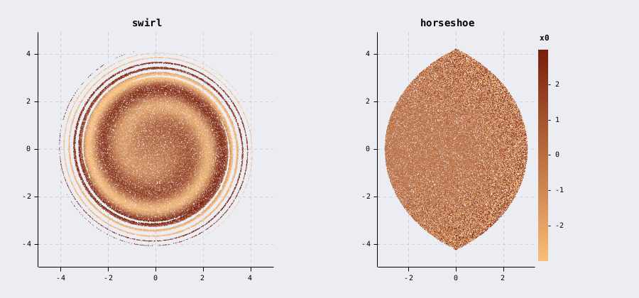

30 Fields
These functions turn functions of the plane into something to draw: a colour per pixel of a complex function, the level lines of a gridded field, and the rows of a vector field (arrows, traces and points mapped through it). Use them with ordinary charts: field, line, segment and scatter.
(ns reference.data-fields
(:require [fastmath.complex :as cx]
[fastmath.core :as m]
[fastmath.fields :as f]
[fastmath.random :as r]
[fastmath.vector :as v]
[cljplot2.chart :as chart]
[cljplot2.core :as plot]
[cljplot2.data.contour :as contour]
[cljplot2.data.field :as field]
[cljplot2.data.vector-field :as vf]
[cljplot2.describe :as describe]
[notebook-utils :as nu]))The grid below holds a field sin x + cos 1.3y over [-3 3]²: axis coordinates :xs and :ys, their counts :nx and :ny, and :values row by row, x fastest; the isolines section uses it. The table below holds its axis coordinates, the same along x and y:
(def grid-xs (range -3.0 3.01 0.25))| value |
|---|
| -3.0 |
| -2.75 |
| -2.5 |
| -2.25 |
| -2.0 |
| -1.75 |
| -1.5 |
| -1.25 |
| -1.0 |
| -0.75 |
| -0.5 |
| -0.25 |
| 0.0 |
| 0.25 |
| 0.5 |
| 0.75 |
| 1.0 |
| 1.25 |
| 1.5 |
| 1.75 |
| 2.0 |
| 2.25 |
| 2.5 |
| 2.75 |
| 3.0 |
(def grid {:xs (double-array grid-xs) :ys (double-array grid-xs) :nx (count grid-xs) :ny (count grid-xs)
:values (double-array (for [y grid-xs x grid-xs] (m/+ (m/sin x) (m/cos (m/* 1.3 y)))))})The points below form a grid of seeds over [-2 2]²; the trace and mapped point sections use them:
(def seeds (for [x (range -2.0 2.01 0.5) y (range -2.0 2.01 0.5)] [x y]))| value |
|---|
| [-2.0 -2.0] |
| [-2.0 -1.5] |
| [-2.0 -1.0] |
| [-2.0 -0.5] |
| [-2.0 0.0] |
| [-2.0 0.5] |
| [-2.0 1.0] |
| [-2.0 1.5] |
| [-2.0 2.0] |
| [-1.5 -2.0] |
| [-1.5 -1.5] |
| [-1.5 -1.0] |
| [-1.5 -0.5] |
| [-1.5 0.0] |
| [-1.5 0.5] |
| [-1.5 1.0] |
| [-1.5 1.5] |
| [-1.5 2.0] |
| [-1.0 -2.0] |
| [-1.0 -1.5] |
| [-1.0 -1.0] |
| [-1.0 -0.5] |
| [-1.0 0.0] |
| [-1.0 0.5] |
| [-1.0 1.0] |
| [-1.0 1.5] |
| [-1.0 2.0] |
| [-0.5 -2.0] |
| [-0.5 -1.5] |
| [-0.5 -1.0] |
| [-0.5 -0.5] |
| [-0.5 0.0] |
| [-0.5 0.5] |
| [-0.5 1.0] |
| [-0.5 1.5] |
| [-0.5 2.0] |
| [0.0 -2.0] |
| [0.0 -1.5] |
| [0.0 -1.0] |
| [0.0 -0.5] |
| [0.0 0.0] |
| [0.0 0.5] |
| [0.0 1.0] |
| [0.0 1.5] |
| [0.0 2.0] |
| [0.5 -2.0] |
| [0.5 -1.5] |
| [0.5 -1.0] |
| [0.5 -0.5] |
| [0.5 0.0] |
| [0.5 0.5] |
| [0.5 1.0] |
| [0.5 1.5] |
| [0.5 2.0] |
| [1.0 -2.0] |
| [1.0 -1.5] |
| [1.0 -1.0] |
| [1.0 -0.5] |
| [1.0 0.0] |
| [1.0 0.5] |
| [1.0 1.0] |
| [1.0 1.5] |
| [1.0 2.0] |
| [1.5 -2.0] |
| [1.5 -1.5] |
| [1.5 -1.0] |
| [1.5 -0.5] |
| [1.5 0.0] |
| [1.5 0.5] |
| [1.5 1.0] |
| [1.5 1.5] |
| [1.5 2.0] |
| [2.0 -2.0] |
| [2.0 -1.5] |
| [2.0 -1.0] |
| [2.0 -0.5] |
| [2.0 0.0] |
| [2.0 0.5] |
| [2.0 1.0] |
| [2.0 1.5] |
| [2.0 2.0] |
30.1 Domain colouring
field/domain-color returns a :pixel-color function for chart/field that colours a complex function by domain colouring: the hue is the argument of f(x + iy), the brightness its magnitude wrapped into [0 1], in a hue-first colour space. Use it to see the zeros, poles and phase of a complex function.
f– A complex function offastmath.complexfromVec2toVec2, e.g.cx/log.
:pixel-color function of a point [x y] that returns the colour of f(x + iy).These options set how the magnitude wraps and the colour space. The panels below draw log(z) / sin(z) with the defaults, then with every other :wrap:
(plot/render-image (plot/arrange [{:charts [(chart/field {:pixel-color (field/domain-color (fn [z] (cx/div (cx/log z) (cx/sin z))))
:domain {:x [-6 6] :y [-6 6]}})]
:labels {:title "defaults (:log2, :HSI)"}}
{:charts [(chart/field {:pixel-color (field/domain-color (fn [z] (cx/div (cx/log z) (cx/sin z)))
{:wrap :log10})
:domain {:x [-6 6] :y [-6 6]}})]
:labels {:title ":wrap :log10"}}
{:charts [(chart/field {:pixel-color (field/domain-color (fn [z] (cx/div (cx/log z) (cx/sin z)))
{:wrap :exp})
:domain {:x [-6 6] :y [-6 6]}})]
:labels {:title ":wrap :exp"}}
{:charts [(chart/field {:pixel-color (field/domain-color (fn [z] (cx/div (cx/log z) (cx/sin z)))
{:wrap :frac})
:domain {:x [-6 6] :y [-6 6]}})]
:labels {:title ":wrap :frac"}}
{:charts [(chart/field {:pixel-color (field/domain-color (fn [z] (cx/div (cx/log z) (cx/sin z)))
{:wrap :sigmoid})
:domain {:x [-6 6] :y [-6 6]}})]
:labels {:title ":wrap :sigmoid"}}
{:charts [(chart/field {:pixel-color (field/domain-color (fn [z] (cx/div (cx/log z) (cx/sin z)))
{:wrap :sin})
:domain {:x [-6 6] :y [-6 6]}})]
:labels {:title ":wrap :sin"}}]
{:columns 3})
{:width 1000 :height 680})
The panels below draw z³ - 1 in each colour space; all hues meet at its three zeros:
(plot/render-image (plot/arrange [{:charts [(chart/field {:pixel-color (field/domain-color (fn [z] (cx/sub (cx/mult z (cx/mult z z)) cx/ONE))
{:colorspace :HCL})
:domain {:x [-2 2] :y [-2 2]}})]
:labels {:title ":colorspace :HCL"}}
{:charts [(chart/field {:pixel-color (field/domain-color (fn [z] (cx/sub (cx/mult z (cx/mult z z)) cx/ONE))
{:colorspace :HSB})
:domain {:x [-2 2] :y [-2 2]}})]
:labels {:title ":colorspace :HSB"}}
{:charts [(chart/field {:pixel-color (field/domain-color (fn [z] (cx/sub (cx/mult z (cx/mult z z)) cx/ONE))
{:colorspace :HSI :wrap :log2})
:domain {:x [-2 2] :y [-2 2]}})]
:labels {:title ":colorspace :HSI"}}
{:charts [(chart/field {:pixel-color (field/domain-color (fn [z] (cx/sub (cx/mult z (cx/mult z z)) cx/ONE))
{:colorspace :HSL})
:domain {:x [-2 2] :y [-2 2]}})]
:labels {:title ":colorspace :HSL"}}
{:charts [(chart/field {:pixel-color (field/domain-color (fn [z] (cx/sub (cx/mult z (cx/mult z z)) cx/ONE))
{:colorspace :HSV})
:domain {:x [-2 2] :y [-2 2]}})]
:labels {:title ":colorspace :HSV"}}
{:charts [(chart/field {:pixel-color (field/domain-color (fn [z] (cx/sub (cx/mult z (cx/mult z z)) cx/ONE))
{:colorspace :HWB})
:domain {:x [-2 2] :y [-2 2]}})]
:labels {:title ":colorspace :HWB"}}]
{:columns 3})
{:width 1000 :height 680})
30.2 Isolines
contour/isolines traces the lines of a gridded field at one level by marching squares and returns them as point vectors, each open or closed; chart/contour draws them. Use it for level lines of your own.
grid– A sampled field{:xs :ys :nx :ny :values}: double arrays of the axis coordinates, their counts, and a double array of the values row by row, x fastest.level– The contour level; a value equal to it counts as above.
{:points :closed}, open lines first; empty when the field doesn't cross the level.The table below counts the points of the lines at levels 1 and 1.5: an open line that leaves the grid and a closed ring around the field’s peak:
(nu/result-table (for [level [1.0 1.5] line (contour/isolines grid level)]
(assoc (update line :points count) :level level)))| points | closed | level |
|---|---|---|
| 41 | false | 1.0 |
| 30 | true | 1.5 |
The plot below draws the lines of six levels from a row per point, with its level and line number; a closed line repeats its first point at its end:
(plot/render-image {:data (for [level [-1.0 -0.5 0.0 0.5 1.0 1.5]
[i {:keys [points closed]}] (map-indexed vector (contour/isolines grid level))
[x y] (cond-> points closed (conj (first points)))]
{:level level :line (str level "/" i) :x x :y y})
:mapping {:x :x :y :y :color #(str (:level %)) :group :line}
:charts [(chart/line {:order :data :line-width 2})]
:scales {:color {:title "level" :domain ["-1.0" "-0.5" "0.0" "0.5" "1.0" "1.5"]}}
:aspect :iso}
{:width 600 :height 480})
30.3 Vector field arrows
vector-field/arrows returns the arrows of a vector field on a grid over :domain. Use it with chart/segment and arrowheads.
f– A vector field: a function of a point[x y]that returns a vector[u v], e.g. afastmath.fieldsfield.
{:x :y :xend :yend :magnitude}, from a grid point along the field; zero and non-finite vectors are left out.These options set the domain, the grid and the arrow length. The table below holds the arrows of a rotation on a 4 × 4 grid:
(nu/result-table (vf/arrows (fn [[x y]] (v/vec2 (- y) x)) {:domain {:x [-2 2] :y [-2 2]} :n 4}))| x | y | xend | yend | magnitude |
|---|---|---|---|---|
| -1.5 | -1.5 | -0.8776564068446936 | -2.1223435931553065 | 2.1213203435596424 |
| -0.5 | -1.5 | 0.2535005691504276 | -1.751166856383476 | 1.5811388300841898 |
| 0.5 | -1.5 | 1.2535005691504275 | -1.248833143616524 | 1.5811388300841898 |
| 1.5 | -1.5 | 2.1223435931553065 | -0.8776564068446936 | 2.1213203435596424 |
| -1.5 | -0.5 | -1.248833143616524 | -1.2535005691504275 | 1.5811388300841898 |
| -0.5 | -0.5 | -0.14154543408980363 | -0.8584545659101963 | 0.7071067811865476 |
| 0.5 | -0.5 | 0.8584545659101963 | -0.14154543408980363 | 0.7071067811865476 |
| 1.5 | -0.5 | 1.751166856383476 | 0.2535005691504276 | 1.5811388300841898 |
| -1.5 | 0.5 | -1.751166856383476 | -0.2535005691504276 | 1.5811388300841898 |
| -0.5 | 0.5 | -0.8584545659101963 | 0.14154543408980363 | 0.7071067811865476 |
| 0.5 | 0.5 | 0.14154543408980363 | 0.8584545659101963 | 0.7071067811865476 |
| 1.5 | 0.5 | 1.248833143616524 | 1.2535005691504275 | 1.5811388300841898 |
| -1.5 | 1.5 | -2.1223435931553065 | 0.8776564068446936 | 2.1213203435596424 |
| -0.5 | 1.5 | -1.2535005691504275 | 1.248833143616524 | 1.5811388300841898 |
| 0.5 | 1.5 | -0.2535005691504276 | 1.751166856383476 | 1.5811388300841898 |
| 1.5 | 1.5 | 0.8776564068446936 | 2.1223435931553065 | 2.1213203435596424 |
The left panel below draws the rotation on the default square grid, the middle one on a shifted grid with longer arrows. The right one draws a fastmath field (fastmath.fields) and colours the arrows by magnitude:
(plot/render-image (plot/arrange [{:data (vf/arrows (fn [[x y]] (v/vec2 (- y) x)) {:domain {:x [-2 2] :y [-2 2]} :n 12 :grid :square})
:mapping {:x :x :y :y :xend :xend :yend :yend}
:charts [(chart/segment {:arrow {:end true :size 5}})]
:aspect :iso
:labels {:title "rotation, :n 12"}}
{:data (vf/arrows (fn [[x y]] (v/vec2 (- y) x)) {:domain {:x [-2 2] :y [-2 2]} :n 12 :grid :shifted
:length-scale 1.6})
:mapping {:x :x :y :y :xend :xend :yend :yend}
:charts [(chart/segment {:arrow {:end true :size 5}})]
:aspect :iso
:labels {:title ":grid :shifted, :length-scale 1.6"}}
{:data (vf/arrows (f/field :hyperbolic) {:domain {:x [-3 3] :y [-3 3]} :n [16 12]})
:mapping {:x :x :y :y :xend :xend :yend :yend :color :magnitude}
:charts [(chart/segment {:line-width 1.5 :arrow {:end true :size 5}})]
:scales {:color {:title "|f|" :range [[160 200 235] [8 48 107]]}}
:aspect :iso
:labels {:title "hyperbolic, :n [16 12]"}}]
{:columns 3 :widths [1 1 1.25]})
{:width 1000 :height 360})
30.4 Streamlines
vector-field/traces returns paths that follow the field from seed points. Use it for streamlines.
f– A vector field: a function of a point[x y]that returns a vector[u v], e.g. afastmath.fieldsfield.seeds– The start points[x y]of the paths.
{:id :i :x :y}: the seed's index, the step (0 at the seed) and the point; a path ends before a non-finite point.These options set the number of steps and their length. The table below holds the first rows of five steps from every seed:
(nu/result-table (vf/traces (fn [[x y]] (v/vec2 (- y (* 0.3 x)) (- (- x) (* 0.3 y)))) seeds {:steps 5 :step 0.1}))| id | i | x | y |
|---|---|---|---|
| 0 | 0 | -2.0 | -2.0 |
| 0 | 1 | -2.1326941323675244 | -1.7535680398888838 |
| 0 | 2 | -2.23783439818578 | -1.502577466432546 |
| 0 | 3 | -2.3159735325632056 | -1.2498361137385585 |
| 0 | 4 | -2.367921031730463 | -0.9979880121369391 |
| 0 | 5 | -2.3947157177659526 | -0.7494934877929759 |
| 1 | 0 | -2.0 | -1.5 |
| 1 | 1 | -2.0833823981692356 | -1.2730145827615251 |
| 1 | 2 | -2.1431177721583166 | -1.0457539987500601 |
| 1 | 3 | -2.180058693509732 | -0.820446466238815 |
| 1 | 4 | -2.1952391650637066 | -0.5991462142454362 |
| 1 | 5 | -2.1898489537668646 | -0.3837226543971938 |
| 2 | 0 | -2.0 | -1.0 |
| 2 | 1 | -2.0361257350746444 | -0.7922770233207945 |
| 2 | 2 | -2.0524157501566616 | -0.5881295218717029 |
| 2 | 3 | -2.0499532460498493 | -0.38923395340405986 |
| 2 | 4 | -2.029933932100716 | -0.1970925207443461 |
| 2 | 5 | -1.9936434567932542 | -0.013030095031090122 |
| 3 | 0 | -2.0 | -0.5 |
| 3 | 1 | -1.9911621372514154 | -0.30998595090543 |
| 3 | 2 | -1.9659311982923342 | -0.12699329700572823 |
| 3 | 3 | -1.9255700651709877 | 0.047784846436363965 |
| 3 | 4 | -1.8713967278872468 | 0.21332483551228554 |
| 3 | 5 | -1.804765115202399 | 0.36876966802643063 |
| 4 | 0 | -2.0 | 0.0 |
| 4 | 1 | -1.9474356296263828 | 0.17521456791205703 |
| 4 | 2 | -1.8813523051927135 | 0.3400972781061605 |
| 4 | 3 | -1.803191878234304 | 0.4938531634466644 |
| 4 | 4 | -1.7144052933236198 | 0.6358549655501019 |
| 4 | 5 | -1.6164359532414818 | 0.7656357955896416 |
| 5 | 0 | -2.0 | 0.5 |
| 5 | 1 | -1.9027835097655688 | 0.663500460848816 |
| 5 | 2 | -1.7944067264959316 | 0.8130911841913382 |
| 5 | 3 | -1.6765454238867001 | 0.9483137187007858 |
| 5 | 4 | -1.5508442490712009 | 1.0688850797518974 |
| 5 | 5 | -1.418901140224973 | 1.1746862318832736 |
| 6 | 0 | -2.0 | 1.0 |
| 6 | 1 | -1.8554970597014222 | 1.1535343740672388 |
| 6 | 2 | -1.7019530675913592 | 1.2890548870023075 |
| 6 | 3 | -1.5413591103531576 | 1.4064222247974436 |
| 6 | 4 | -1.3756343758559066 | 1.5056916332339652 |
| 6 | 5 | -1.2066101501008248 | 1.5870967084159493 |
| 7 | 0 | -2.0 | 1.5 |
| 7 | 1 | -1.80544107093845 | 1.6436030190692392 |
| 7 | 2 | -1.6039968150043864 | 1.764581941621967 |
| 7 | 3 | -1.3980450417719874 | 1.8631313352224745 |
| 7 | 4 | -1.1898473318934568 | 1.9396686584724363 |
| 7 | 5 | -0.9815314552760281 | 1.9948126523849758 |
| 8 | 0 | -2.0 | 2.0 |
| 8 | 1 | -1.7535680398888838 | 2.1326941323675244 |
| 8 | 2 | -1.502577466432546 | 2.23783439818578 |
| 8 | 3 | -1.2498361137385585 | 2.3159735325632056 |
| 8 | 4 | -0.9979880121369391 | 2.367921031730463 |
| 8 | 5 | -0.7494934877929759 | 2.3947157177659526 |
| 9 | 0 | -1.5 | -2.0 |
| 9 | 1 | -1.6436030190692392 | -1.80544107093845 |
| 9 | 2 | -1.764581941621967 | -1.6039968150043864 |
| 9 | 3 | -1.8631313352224745 | -1.3980450417719874 |
| 9 | 4 | -1.9396686584724363 | -1.1898473318934568 |
| 9 | 5 | -1.9948126523849758 | -0.9815314552760281 |
| 10 | 0 | -1.5 | -1.5 |
| 10 | 1 | -1.5935357110967199 | -1.326290822248949 |
| 10 | 2 | -1.668620867792265 | -1.1500104671201195 |
| 10 | 3 | -1.7257350095521262 | -0.9729206607365937 |
| 10 | 4 | -1.7655014088025085 | -0.7966616427353375 |
| 10 | 5 | -1.7886682842289645 | -0.6227438594422016 |
| 11 | 0 | -1.5 | -1.0 |
| 11 | 1 | -1.5466255938916524 | -0.8474071472636826 |
| 11 | 2 | -1.5788855496979317 | -0.695888319644038 |
| 11 | 3 | -1.5974396799628807 | -0.5466311299938424 |
| 11 | 4 | -1.6030231809586368 | -0.4007104530917659 |
| 11 | 5 | -1.5964322714758232 | -0.259087135207104 |
| 12 | 0 | -1.5 | -0.5 |
| 12 | 1 | -1.504040477476388 | -0.3666642432791973 |
| 12 | 2 | -1.4972651612017505 | -0.2373218256213093 |
| 12 | 3 | -1.4804313415060757 | -0.11269478221872543 |
| 12 | 4 | -1.4543218972075835 | 0.006592572441781838 |
| 12 | 5 | -1.4197352752183228 | 0.12001074540533642 |
| 13 | 0 | -1.5 | 0.0 |
| 13 | 1 | -1.464399124187886 | 0.11866958604037994 |
| 13 | 2 | -1.4206357493340693 | 0.23073092973188225 |
| 13 | 3 | -1.3695631062430556 | 0.33579735673215777 |
| 13 | 4 | -1.3120262093689654 | 0.4335708747751176 |
| 13 | 5 | -1.2488546084129188 | 0.5238367180121096 |
| 14 | 0 | -1.5 | 0.5 |
| 14 | 1 | -1.4232309279486288 | 0.609092891862475 |
| 14 | 2 | -1.340205224334186 | 0.7085016362240028 |
| 14 | 3 | -1.251961942536096 | 0.798102979128665 |
| 14 | 4 | -1.1595019743009978 | 0.8778671962779756 |
| 14 | 5 | -1.0637817729314563 | 0.9478497614552628 |
| 15 | 0 | -1.5 | 1.0 |
| 15 | 1 | -1.3770779797401889 | 1.1017285684908782 |
| 15 | 2 | -1.249622121862932 | 1.189783461396538 |
| 15 | 3 | -1.1189824584415782 | 1.2643169622757968 |
| 15 | 4 | -0.9864339493764905 | 1.3255943004649857 |
| 15 | 5 | -0.8531697676818744 | 1.3739808908980276 |
| 16 | 0 | -1.5 | 1.5 |
| 16 | 1 | -1.326290822248949 | 1.5935357110967199 |
| 16 | 2 | -1.1500104671201195 | 1.668620867792265 |
| 16 | 3 | -0.9729206607365937 | 1.7257350095521262 |
| … | … | … | … |
The left and middle panels below draw streamlines of a damped rotation from the seed grid, short and long; after 400 steps the spirals stop short of the centre. The right one draws traces of a cellular flow [sin y, sin x] from 300 seeded random points as faint lines: the cells turn in alternate directions, and the panel cuts the traces that leave it:
(plot/render-image (plot/arrange [{:data (vf/traces (fn [[x y]] (v/vec2 (- y (* 0.3 x)) (- (- x) (* 0.3 y)))) seeds
{:steps 20 :step 0.05})
:mapping {:x :x :y :y :group :id}
:charts [(chart/line {:order :data :arrow {:end true :size 5}})]
:aspect :iso
:labels {:title ":steps 20, :step 0.05"}}
{:data (vf/traces (fn [[x y]] (v/vec2 (- y (* 0.3 x)) (- (- x) (* 0.3 y)))) seeds
{:steps 400 :step 0.05})
:mapping {:x :x :y :y :group :id :color :i}
:charts [(chart/line {:order :data})]
:scales {:color {:title "step" :range [[160 200 235] [8 48 107]]}}
:aspect :iso
:labels {:title ":steps 400"}}
{:data (let [g (r/rng :mersenne 12)]
(vf/traces (fn [[x y]] (v/vec2 (m/sin y) (m/sin x)))
(repeatedly 300 #(vector (r/drandom g -4 4) (r/drandom g -4 4)))
{:steps 60 :step 0.05}))
:mapping {:x :x :y :y :group :id}
:charts [(chart/line {:order :data :color [20 70 140 70]})]
:scales {:x {:domain [-4 4] :nice false} :y {:domain [-4 4] :nice false}}
:aspect :iso
:labels {:title "[sin y, sin x], 300 seeds"}}]
{:columns 3 :widths [1 1.2 1]})
{:width 1000 :height 360})
30.5 Mapped points
vector-field/mapped-points maps seed points once through the field. Use it to draw the image of a region.
f– A vector field: a function of a point[x y]that returns a vector[u v], e.g. afastmath.fieldsfield.seeds– The points[x y]to map.
{:x :y :x0 :y0}: its image and the seed; seeds whose image isn't finite are left out.The table below maps the first 20 seeds through a sinusoidal field:
(nu/result-table (vf/mapped-points (f/field :sinusoidal) (take 20 seeds)))| x | y | x0 | y0 |
|---|---|---|---|
| -0.9092974268256817 | -0.9092974268256817 | -2.0 | -2.0 |
| -0.9092974268256817 | -0.9974949866040544 | -2.0 | -1.5 |
| -0.9092974268256817 | -0.8414709848078965 | -2.0 | -1.0 |
| -0.9092974268256817 | -0.479425538604203 | -2.0 | -0.5 |
| -0.9092974268256817 | 0.0 | -2.0 | 0.0 |
| -0.9092974268256817 | 0.479425538604203 | -2.0 | 0.5 |
| -0.9092974268256817 | 0.8414709848078965 | -2.0 | 1.0 |
| -0.9092974268256817 | 0.9974949866040544 | -2.0 | 1.5 |
| -0.9092974268256817 | 0.9092974268256817 | -2.0 | 2.0 |
| -0.9974949866040544 | -0.9092974268256817 | -1.5 | -2.0 |
| -0.9974949866040544 | -0.9974949866040544 | -1.5 | -1.5 |
| -0.9974949866040544 | -0.8414709848078965 | -1.5 | -1.0 |
| -0.9974949866040544 | -0.479425538604203 | -1.5 | -0.5 |
| -0.9974949866040544 | 0.0 | -1.5 | 0.0 |
| -0.9974949866040544 | 0.479425538604203 | -1.5 | 0.5 |
| -0.9974949866040544 | 0.8414709848078965 | -1.5 | 1.0 |
| -0.9974949866040544 | 0.9974949866040544 | -1.5 | 1.5 |
| -0.9974949866040544 | 0.9092974268256817 | -1.5 | 2.0 |
| -0.8414709848078965 | -0.9092974268256817 | -1.0 | -2.0 |
| -0.8414709848078965 | -0.9974949866040544 | -1.0 | -1.5 |
The plots below map 100 000 seeded random points of the square [-3 3]² through two fastmath fields and colour them by the seed’s x:
(plot/render-image (plot/arrange [{:data (let [g (r/rng :mersenne 9)]
(vf/mapped-points (f/field :swirl)
(repeatedly 100000 #(vector (r/drandom g -3 3) (r/drandom g -3 3)))))
:mapping {:x :x :y :y :color :x0}
:charts [(chart/scatter {:size 1})]
:scales {:color {:range [[250 190 120] [120 30 10]]}}
:legend false
:aspect :iso
:labels {:title "swirl"}}
{:data (let [g (r/rng :mersenne 10)]
(vf/mapped-points (f/field :horseshoe)
(repeatedly 100000 #(vector (r/drandom g -3 3) (r/drandom g -3 3)))))
:mapping {:x :x :y :y :color :x0}
:charts [(chart/scatter {:size 1})]
:scales {:color {:title "x0" :range [[250 190 120] [120 30 10]]}}
:aspect :iso
:labels {:title "horseshoe"}}]
{:columns 2 :widths [1 1.2]})
{:width 900 :height 420})
source: notebooks/reference/data_fields.clj